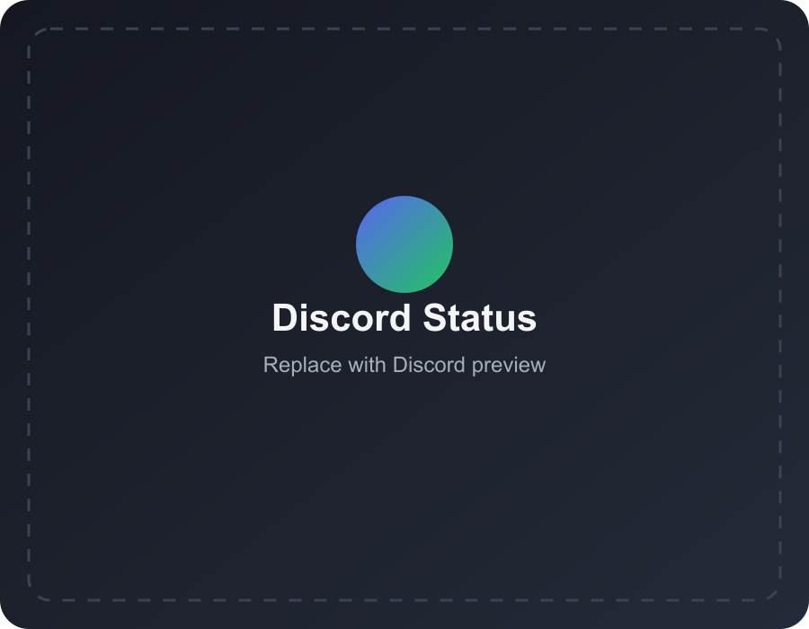

Media that looks right
Uses show posters, player artwork, album art, and site icons with sensible fallbacks. Playback timing stays in Discord's progress UI instead of being duplicated in the text.

Discord StatusShare the show you are watching, the song you are listening to, the game you are playing, the app you are using, or a custom activity you wrote yourself.
Paused · 02:04 / 23:42
Artwork, timing, and platform included
The extension detects browser activity. The companion app handles Discord, desktop apps, games, shortcuts, selection, and privacy locally on your computer.
Uses show posters, player artwork, album art, and site icons with sensible fallbacks. Playback timing stays in Discord's progress UI instead of being duplicated in the text.
Show VLC movie titles, Spotify, games, editors, meetings, and other allowed foreground apps without sending your window data to a remote service.
Choose active-tab or smart mode, pin a tab, use manual activities, change shortcuts, block domains, hide titles, and pause during meetings.
Choose the setup that matches what you want to share. Browser activity needs the extension and companion; VLC, Spotify desktop, and games need the companion; Discord desktop must be open for Rich Presence.
Open Chrome Web Store, choose Add to Chrome, and allow it on the sites you want to share.
Pick the installer for your OS from the latest release. Start it once and leave Discord desktop open.
Use Auto Detect for everyday use, Active Tab Only for privacy, or the selector shortcut to pin a specific activity.